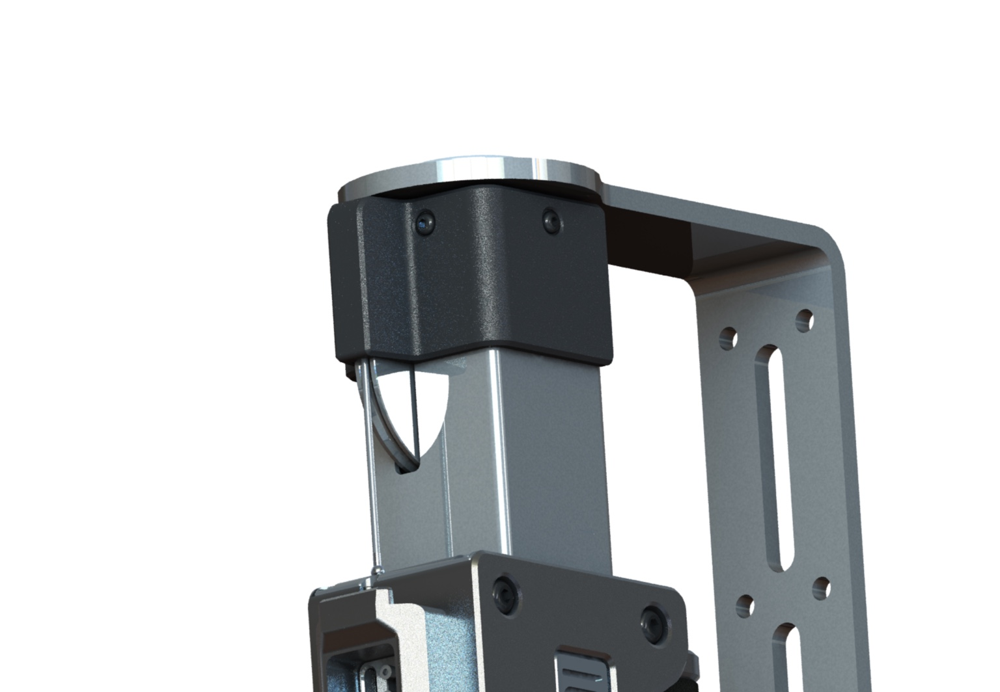
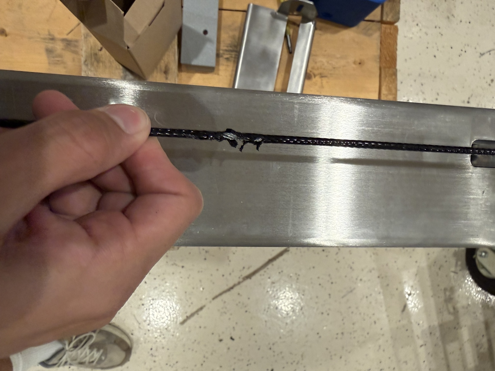
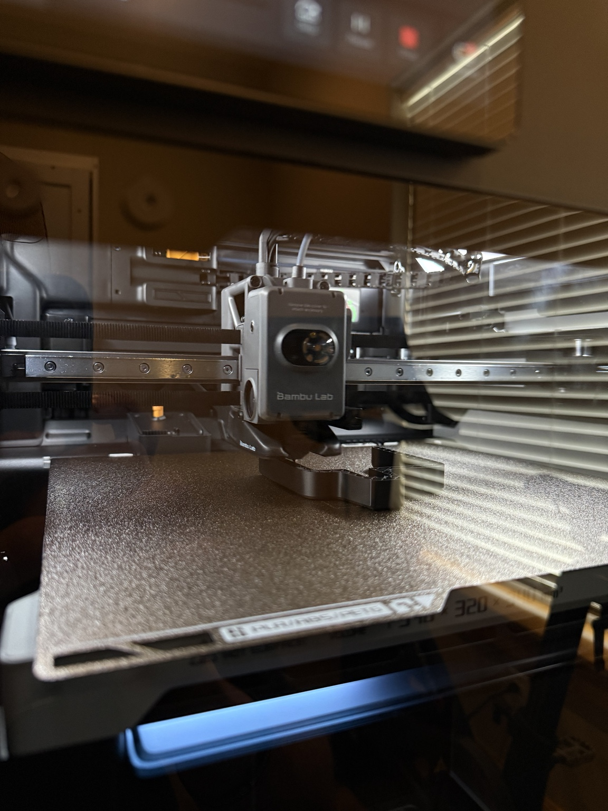
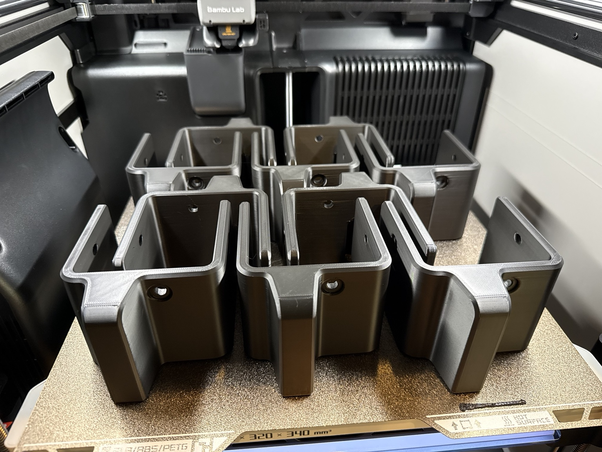

Commercial Product Improvement
1080 Motion Cable Guide
Designed, prototyped, manufactured, and validated a production-ready cable guide that prevents premature cable wear on a commercial 1080 Motion training system. The project focused on solving a recurring mechanical failure while maintaining compatibility with the existing hardware.

Problem
Identifying the root cause.
During routine hardware inspections I identified recurring cable damage caused by repeated contact with the aluminum edge near the upper pulley assembly. Left unresolved, the abrasion would eventually weaken the cable and increase maintenance requirements.
The objective was to eliminate cable contact without modifying the existing assembly or affecting normal operation.


Design
Engineering the solution.
Using measurements from the existing assembly, I designed a custom cable guide that mounts using existing fasteners while redirecting the cable away from the wear point. Smooth radii reduce abrasion while preserving the original cable path.
- No permanent modification
- Uses existing fasteners
- Designed for manufacturing
- Validated clearances
Prototype
Rapid prototyping.
The design was manufactured on a Bambu Lab printer for rapid fit verification and functional testing, allowing quick iterations before deployment.


Production
Batch manufacturing.
Once validated, multiple parts were produced simultaneously for deployment across additional systems, improving manufacturing efficiency while maintaining dimensional consistency.
Results
A simple solution with measurable impact.
Engineering Skills Demonstrated